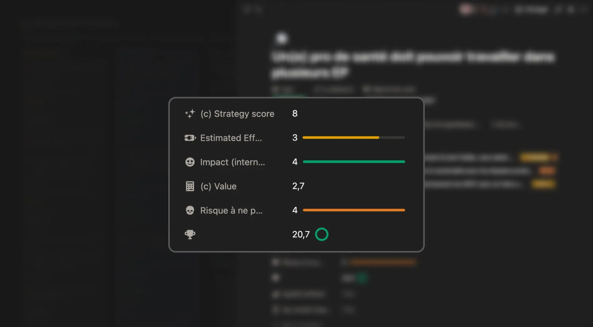
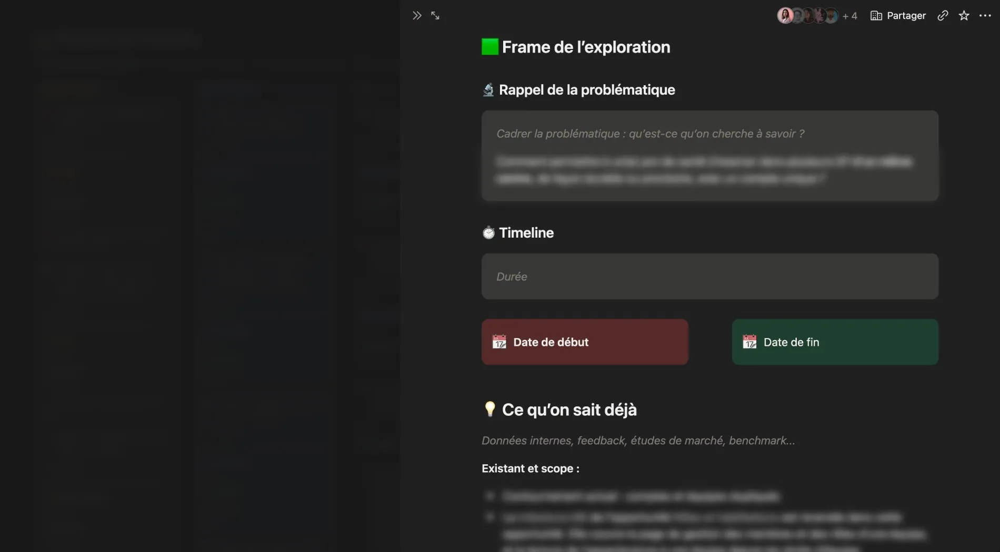
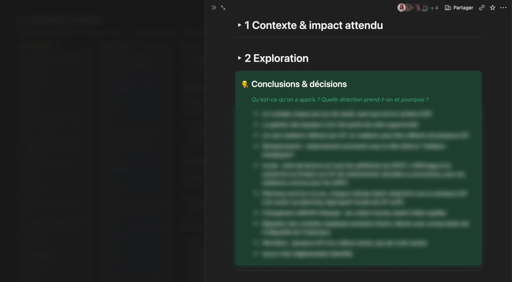
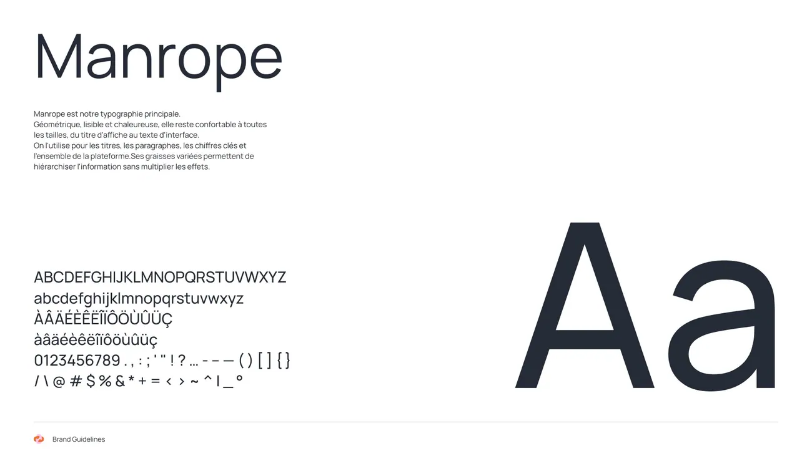
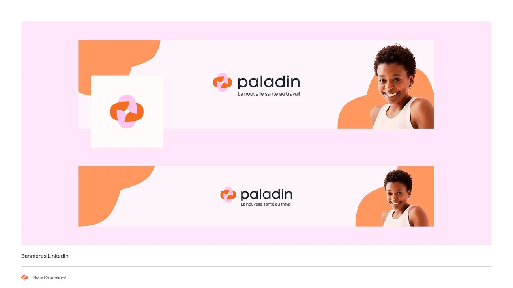
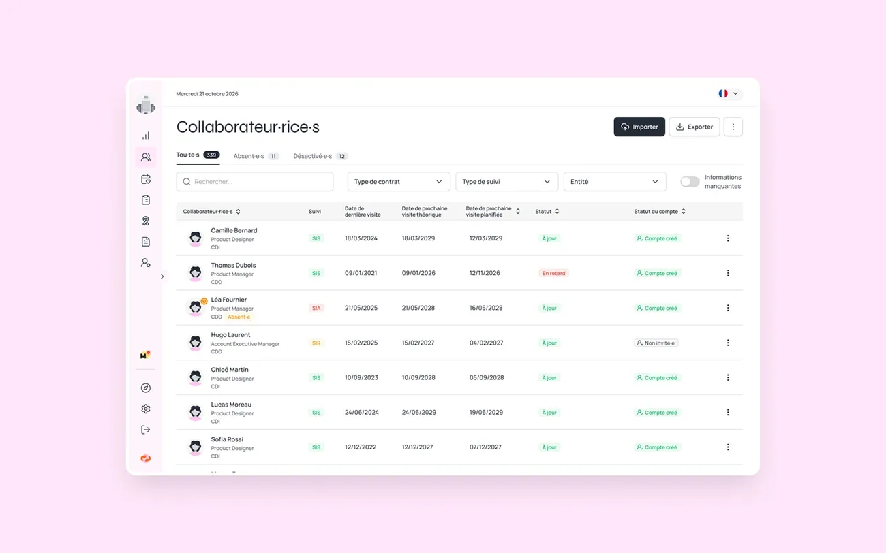
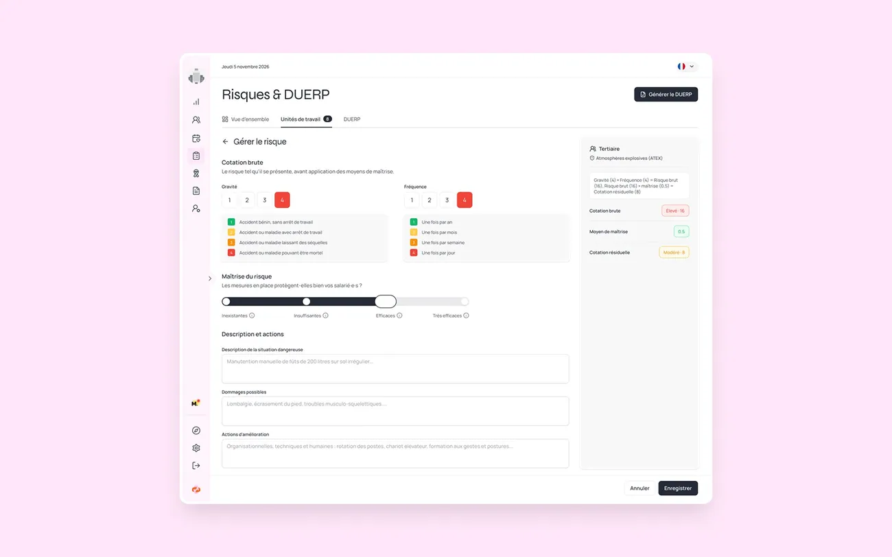
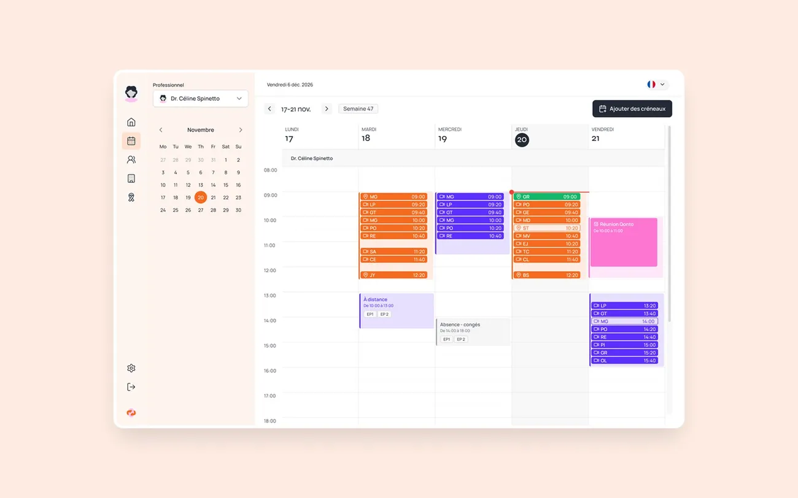
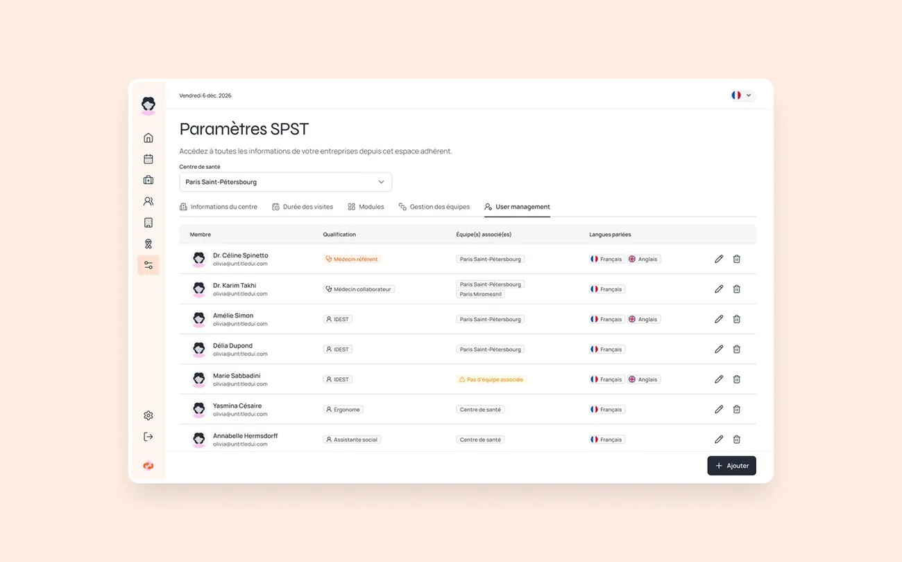

Case study
Paladin
Building a new model for workplace prevention
01Context
Paladin is a SaaS platform for prevention and occupational health. It builds on Sano, the first occupational health and prevention service to be newly licensed in Île-de-France in 30 years.
Its mission: give everyone the means to take charge of their health. Paladin is built around three complementary products, designed for a multi-stakeholder ecosystem.
02Three products
One multi-stakeholder ecosystem, three interfaces designed for the people who use them.
- 01Paladin RH Companies manage their occupational health obligations on their own: self-service membership, onboarding, workforce management and appointment planning.
- 02Paladin Employee Employees manage their appointments, documents and information on their own, in a simple, reassuring interface where confidentiality is visible at every step.
- 03Paladin Pro The everyday tool of Sano’s medical teams. Dense, reliable interfaces support the consultation all the way to the medical record export, freeing up medical time.


03Product vision
Paladin’s strategy is to build a new model for workplace prevention, powered by a multi-stakeholder platform of personalised health services. It rests on three pillars:
- 01Equip companies to take an active role in their teams’ health.
- 02Give prevention services the tools to maximise their impact.
- 03Bring prevention into employees’ everyday lives.

04Methodology
As the team’s only Product Designer, I work with both product squads. I cover all three platforms, from discovery to release, and I own Paladin’s brand identity.
01Prioritise
Each opportunity is assessed on the goals it serves, its impact, effort and the risk of not acting, then placed on a Now, Next, Later roadmap.

02Frame
We define the problem, existing workarounds, expected impact and metrics.

03Explore
One cycle combines data, benchmarks and user research, through to a documented decision.


04Design
We work through use cases, edge cases and business rules, with interactive prototypes.


05Ship
Critical flows are tested, rollout is supported and teams are trained.
05Branding
- 01A brand ecosystem that keeps marketing, product and user experience consistent.
- 02A solid foundation to grow both product and marketing.
- 03Rollout of key assets (website, LinkedIn, print) to build credibility and a premium feel.
- 04An end-to-end approach, using AI tools to move faster.








06Screens — Paladin RH






07Screens — Paladin Pro



